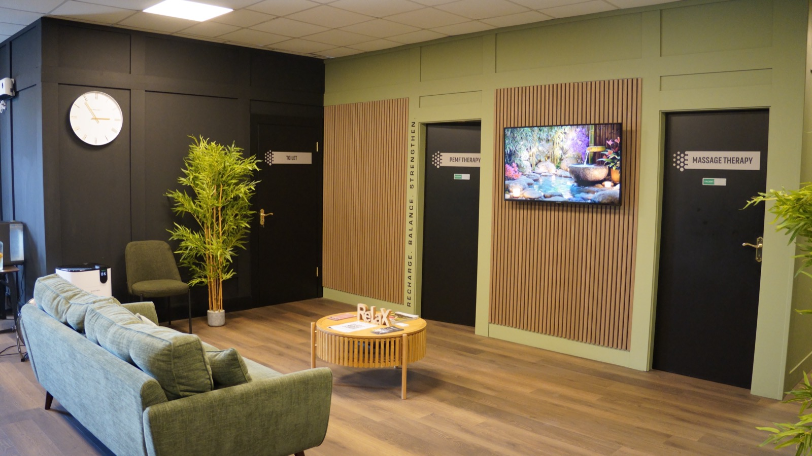

A recovery clinic in Clonmel. Four therapies, guided start to finish, in a room built to be calm.
Book a session
Breathe easier
Higher oxygen levels to support recovery, clarity and steady energy.



Hands-on bodywork
Therapeutic massage, reflexology and lymphatic drainage, from clinical therapists.

Built for real people: training hard, living busy, or simply wanting to move, sleep and feel better again.
Our sessions support your body's natural processes, so you can keep up with life rather than slow down. You do not need to be an athlete, and you do not need to know which therapy you want before you arrive.
Between twelve and fifty minutes. There is no recovery from the recovery, so people come on a lunch break.
You sit in a pressurised chamber and breathe air with a higher concentration of oxygen than the room has. It is the pressure that does the work, not the percentage on the tank — under it, oxygen dissolves further into the blood than it can at room pressure. Most people read, listen to something, or doze.
See hyperbaric oxygenDeep, gentle warmth from an infrared bed, reaching muscle and joint rather than only warming the skin. You lie down fully clothed and the bed does the rest. Most people find it the easiest thirty minutes of their week.
See infraredHigh-Intensity Focused Electromagnetic fields, applied while you sit or lie fully clothed. Sessions are short and most people feel nothing more than a faint pulsing. It supports circulation and eases tension, which is why it sits well alongside the other therapies rather than replacing them.
See hifemHands-on bodywork from clinical therapists: therapeutic massage, reflexology and lymphatic drainage. Taken on their own, or alongside the other therapies when you want the room to do more than one thing.
See massage“I'm in my hyperbaric chamber 6 days a week and can honestly say my recovery is so much better.”
“It has made a huge difference to me physically and mentally. It's given me my freedom back.”
Tell us what you are hoping to get out of it and we will point you at the right therapy. No obligation to book a block.